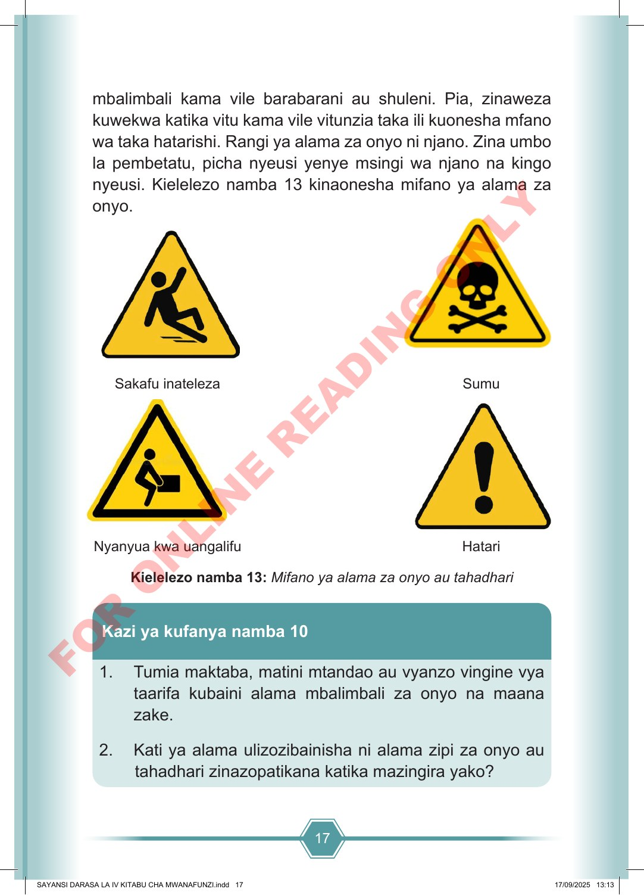

17 mbalimbali kama vile barabarani au shuleni. Pia, zinaweza kuwekwa katika vitu kama vile vitunzia taka ili kuonesha mfano wa taka hatarishi. Rangi ya alama za onyo ni njano. Zina umbo la pembetatu, picha nyeusi yenye msingi wa njano na kingo nyeusi. Kielelezo namba 13 kinaonesha mifano ya alama za onyo. Sakafu inateleza Sumu Nyanyua kwa uangalifu Hatari Kielelezo namba 13: Mifano ya alama za onyo au tahadhari 1. Tumia maktaba, matini mtandao au vyanzo vingine vya taarifa kubaini alama mbalimbali za onyo na maana zake. 2. Kati ya alama ulizozibainisha ni alama zipi za onyo au tahadhari zinazopatikana katika mazingira yako? Kazi ya kufanya namba 10 SAYANSI DARASA LA IV KITABU CHA MWANAFUNZI.indd 17 SAYANSI DARASA LA IV KITABU CHA MWANAFUNZI.indd 17 17/09/2025 13:13 17/09/2025 13:13 F O R O N L I N E R E A D I N G O N L Y